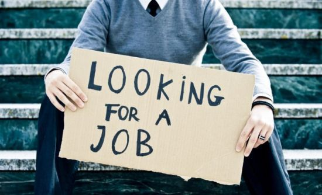
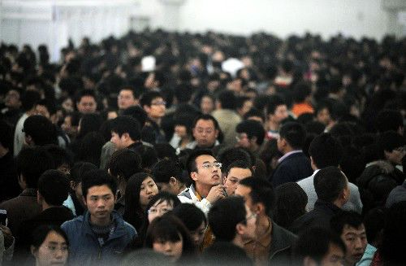

2020无春招
原文链接 备份链接 《创新经济战疫计划》，是燃财经在新型肺炎疫情期间推出的特别栏目，关注创新经济企业遇到的新难题、商讨应该采取的新对策，希望能够帮助中小企业一起战胜挑战、把握机会。 作者 | 苏琦 编辑 | 魏佳 “金三银四”的春招季，如 …


文/杨洁
编辑/大风
在职场飘了五年的陈冬原以为，在年前裸辞，他完全可以从容应对。
去年12月份下旬，陈冬从原来的一家中型游戏公司离职。当天晚上11点钟，他在好友群吆喝了一声：“有啥工作机会想着兄弟。”
由于积累了太多负面情绪，陈冬准备好好过个年再重新出发，原本心理预期是休息一两个月时间。俗话说“金三银四”，对于职场老人的陈冬来说，拿几个offer并没那么难。
然而疫情的“黑天鹅”骤然起飞，不少公司延期复工，市场情况比陈冬想得要糟糕。从大年初七开始，他就开始了重复性的四部曲：刷招聘网站、找内推、改简历、等面试，但是也一直没有找到合适的机会。
“人的心态太容易崩溃了。”找工作的遥遥无期，让陈冬忍不住在电话那头爆了个粗口。
领英大数据显示，自节后第二周开始，求职已经开始呈现恢复趋势，目前职位浏览、职位申请等指标对比去年分别上涨7%和6%。与之相对的，则是招聘市场的缓慢复苏，2020年春招季的职位发布数量同比去年同期仍有20%-35%的降幅。
像陈冬一样，正在求职的职场人都正面临着一场变局。变局的背后，是市场的谨慎，每个人都在思考如何更好地活下去。
牵一发而动全身，疫情中的求职者，不仅面临着计划被打乱，同时还衍生了诸多问题，比如僧多粥少，竞争加剧。
突然被疫情击中的职场人，都面临着求职这一大难题。

与疫情狭路相逢的求职
“如果再给我一次机会，我可能不会裸辞。”陈冬向锌财经发送了一个捂脸的emoji。
春节前，陈冬所在的项目小组面临着架构调整。“部门要合并。”各种各样的传言开始在内部流传。陈冬突然有些挫败，挫败的并不是自己的去留问题，而是对手头负责的项目感到惋惜。
最终，他选择了辞职。
离职后，陈冬也投了几家心仪的公司，陆续接受面试邀请，但是年前整个人处于极度松弛的状态。
但度过了那个阶段，眼下关于求职的焦虑，是实实在在的。
从年后开始，陈冬已经陆续投了12家公司，接受了7家面试邀请，但尚未收到任何一家的offer。“有些是回应没有那么乐观，有些是职位不对口。”他总结说。
在他的求职过程中，虽然不断有公司在陆续更新招聘需求，但更多的招聘需求已经被冻结。一些年前所看好的心仪岗位，也被默默关闭掉。
对于已经攒下一些积蓄的陈冬来说，钱目前还不是头等问题，最重要的则是职场规划问题。
大学及毕业后一直在杭州的陈冬，累积的人脉关系，资源更多聚集在杭州。目前除了杭州，他开始注意上海、南京的职位消息，但换个城市，对陈冬来说，生活和工作上，有太多需要重构的地方。

求职中的职场人 图源网络
这样的苦恼并不罕见。
作为互联网浪潮中的一员，郭琼年底在前东家办理了离职手续，准备休整后，再开始找工作，刚辞职那两个月，她几乎经常出门与朋友聚会，熬夜看小说到四五点。
短暂的两周放纵后，更多还是焦虑和迷茫。
郭琼开始投了几家心仪的公司，陆续接受面试邀请，虽然一直都有面试，但是郭琼也面临着尴尬的处境：大公司不缺人、小的公司她看不上。
疫情发生后，面试方式也开始改为线上沟通，如果谈得不错，则安排视频面试。过去的一周多时间，郭琼几乎天天捧着手机，和HR线上沟通。
“早上一睁眼就摸手机，打开手机就开始回消息。”目前收到了一个offer的郭琼，也开始没那么迷茫。她开始向往以往繁忙的工作，怀念格子间的同事，甚至在睡眠紊乱的时候，开始反思去年的工作应该有哪些改善。
“原来一直以来，工作给了我最大的安全感。”郭琼告诉锌财经。
春节后本来是每年比较活跃的招聘旺季，但2020的春季，却无比艰难。无论是应届生还是已经辞职的职场人士，除了招牌需求减少，竞争加剧的问题，求职者还面临着交通不畅，无法按时到岗的现实阻碍。

原本被寄予希望的春招 图源网络

一声枪响
在这个特殊又艰难的时候，突然被击中的职场人开始了实实在在的担忧，担心房贷和车贷、还有支付宝里的蚂蚁花呗和如期而至信用卡账单。
在极大的不确定性面前，许多准备跳槽的人安定下来。
“还好我年前没离职”。就职于上海某企业的吴文说。她十分庆幸自己没有在年前辞职，去年11月她所在的项目小组被调整，所在部门的同事，开始逐个跳槽，或者出去创业。
“那段时间真的蠢蠢欲动。”吴文开始羡慕那些辞职的同事，看到过渡期间，前同事们朋友圈中旅游的照片，吴文更加按耐不住。“那时候，微信群里总是和朋友讨论离职。”
疫情的到来，最终左右了她的决策。她开始庆幸自己等了等，如果当时辞职了，年后至少要休息挺久。
“身边两个朋友本来也拿到了offer，但由于疫情的原因，公司觉得人力成本太高就毁约了。”吴文说。
疫情的出现让她重新规划了下一步方向，为了不让自己陷入到被市场淘汰的焦虑，她也开始学习线上课程，为自身拓展更多元的职业选择。
疫情爆发已两个月。据领英数据显示：疫情爆发期间初级职位影响最大，职位发布数量与去年同期减少了94%。这意味着具备更强竞争力的求职者才能脱颖而出，比如是否具备核心的技能、是否具有明确的职业目标和规划等。
行业洗牌、公司变动以及办公条件等因素的限制，对求职者产生着最为直接的影响。
市场环境发生了变化，犹如多米诺骨牌一般，即使疫情已经逐渐得到控制，但是职场上的机会，也不会立刻恢复到之前的状态。
市场的震动中，除了艰难求职的人，受波及最大的，还有今年的应届毕业生。
王玉琪是浙江一所高校传媒专业的应届毕业生，如果没有疫情，此刻她已经准备春招。而现在，浙江省内学生短期内不得返校，部分企业开始了云面试。
其中，阿里、苏宁、腾讯等互联网企业更是早就将线下的春招会集中到了线上进行，包括线上平台、开展宣讲会、视频面试等。
“具体推迟到什么时候，现在也没有准确的答复。”王玉琪一边等待春季招聘会的通知，一边继续向其他公司投递简历。
对于她来说，刷招聘网站，变成了缓解焦虑的一种方式。
即使这样，王玉琪在春招中依然感到阻力重重。一方面，春招比秋招竞争大，加上名额少，投简历容易石沉大海；另一方面，因为宣讲会的取消，视频面试的成功率也会受到影响。
不论对于应届毕业生，还是离职正在找工作的人来说，在这个特殊时刻，眼下并没有太多的选择。

困局
疫情之下，各大企业都受到了严重的冲击，招聘职位的数量则出现断崖式下降。与此对应的是，求职者已经在 2 月 3日 后开始了密集的求职，
BOSS 直聘发布的《2020 年春节后十天人才趋势观察》数据显示，今年春节后十天（2.3-2.12），就业市场新增招聘需求较 2019 年同阶段减半，其中 100 人以下的小微企业波及最大，新增人才需求锐减 61%.

数据来自BOSS直聘研究院
此外，由于市场风险加剧，求职者求稳心态强烈，有跳槽考虑的职场人开始推迟换工作。小企业面临着人才需求和供给同时下降的困境。
领英调研数据也显示，近期求职者更为谨慎。春节后领英平台上非应届毕业生求职者的职位申请数量较今年春节前和去年同期都有所下降。除了医疗卫生领域外，其他领域的招聘信息浏览数量都在减少，职场人更为谨慎。
求职者难找的同时，企业也难招。
当前疫情波及行业广泛，不少企业无法按时复工，但部分行业却逆势崛起。就职于某线上教育企业的黄晶，年后有一批招聘计划需要推进，由于业务主要在线上，公司反而在流量反弹中加速发展。
从正月初七开始，她便开始在线办公，筛选候选人、安排视频面试。以往的春招中，最多一天有十几场初试，而这个求职季，因为一切都转向线上的关系，会有一些求职者会因为这样那样的原因抗拒视频面试。
尽管求职形势严峻，黄晶在过去几天里邀约面试和实际到面的人数都低于预估；其次，求职网站上挂出的合适简历，也不多。
疫情期间，因为视频面试，对于公司实际情况没有整体把握，求职者心里慌，入职成功率也受到了一定影响。
剧烈的变动，让企业和求职者，都陷入两难境地。

谁的黎明
今年的大环境，确实给求职者笼罩了无形的压力。“修行”还是奋斗，这是放在求职者面前的问题。
当前疫情波及行业广泛，不少企业无法按时复工，有的甚至陷入经营困境，但整体来说，大趋势不会变。
不论是宏观还是微观，企业的波动都偶有发生，在这个过程中，企业要强内功；而对于个人来说，放平心态则是更为重要。特殊时期的求职体验，也从侧面给了求职者更为客观、清晰的判断依据。
求职路上，也并不全是坏消息。
一方面，对于有准备的求职者来说，真正考验人的时刻来临，他们也正在开始总结和反思，自己的核心竞争力到底在哪里？

职场人打响生存保卫战 图源网络
疫情期间，陆佳很快通过“云面试”，开启了新的职业生涯。从年前开始，陆佳就开始向心仪公司投递简历，在年后，更是进入了改简历，发简历的重复状态。
“我在大年初二就开始投递简历。”复工之后，陆佳的投递也陆续有了反馈，截止到正月十六，她已经获得三家企业的offer。
权衡之后，她选择了其中一家。“劳动合同也是云签约，新人的培训资料都是线上的。” 就这样，陆佳在线上走完了整个流程，成功入职。
对于准备好了的人来说，竞争加剧的求职季并没有想象中的可怕；但对于毫无准备的人来说，焦虑、迷茫则会伴随很久。
另一方面，中高端人才需求，热门领域职位的需求，不降反增。
据猎聘数据显示，2020年春节后，中高端人才简历投递的峰值比往年出现得晚。春节后开工5个工作日内，无论是简历投递总量，还是简历投递量的峰值均约为春节前的80%。随着后续企业陆续进入常态化运营，简历投递量会持续攀升。
此外，部分行业的需求也在提升。其中互联网尽显轻资产优势，新增中高端人才需求最大。
值得注意的是，消费品行业的人才需求也位居前三，占比为9.39%。疫情爆发后，多数人出行受限，对消费品尤其是日用品的依赖较高，而已经崛起的新零售和本地生活等渠道，带动了企业对人才的需求。

数据来自猎聘网
求职下的个体，都有各自迥异的经历，谁都无法代表职场的全部，不论是哪个行业，都需要新鲜血液的注入，人，永远是重中之重。
职场人既要埋头干活，也要抬头看路。职场本就是一场马拉松，对于大家来讲，这个特殊的时期，更多的是自己跟自己赛跑。
“机会总是留给有准备的人，游戏规则就是这么简单。”陆佳说。
（为保证受访者隐私，陈冬，郭琼，黄晶均为化名）


原文链接 备份链接 《创新经济战疫计划》，是燃财经在新型肺炎疫情期间推出的特别栏目，关注创新经济企业遇到的新难题、商讨应该采取的新对策，希望能够帮助中小企业一起战胜挑战、把握机会。 作者 | 苏琦 编辑 | 魏佳 “金三银四”的春招季，如 …
原文链接 备份链接 2020年和王晟一样的应届高校毕业生有874万，比去年多出40万人。开学推迟，春招冷清，疫情打乱了这届毕业生找工作的阵脚。走不出家门的他们，现在能做的只有时刻守在屏幕前，关注着不时跳出的招聘信息，揣测着春招的形势。 …
原文链接 备份链接 这次疫情，让很多年轻人重新思考自己的职场下一步。 可能的裁员，泡汤的年终奖，不太明朗的求职形势和疫情下复工的危险，是每个职场人或多或少要面临的处境。 稳定还是高薪，健康还是金钱，工作的意义感，所处的生命阶段，这些驱使 …
原文链接 备份链接 燃财经（ID:rancaijing）原创 作者 | 苏琦 编辑 | 凌远川 疫情之下，很多创业者发现，人的问题才是眼下最难处理的。 为了帮助创业者看清局面、应对危机，2月21日，燃财经举办“创新经济战疫计划” 第四期 …
原文链接 备份链接 活着实在是个大工程。 只要活着，问题总会一个个来，路，也是一条条走出来。 漫长的宅家“假期”还在继续，你还能“宅”得动吗？ 春节后两个月一直是每年最为活跃的招聘求职旺季，2020 春季的求职市场，对此前“万事俱备，只等 …